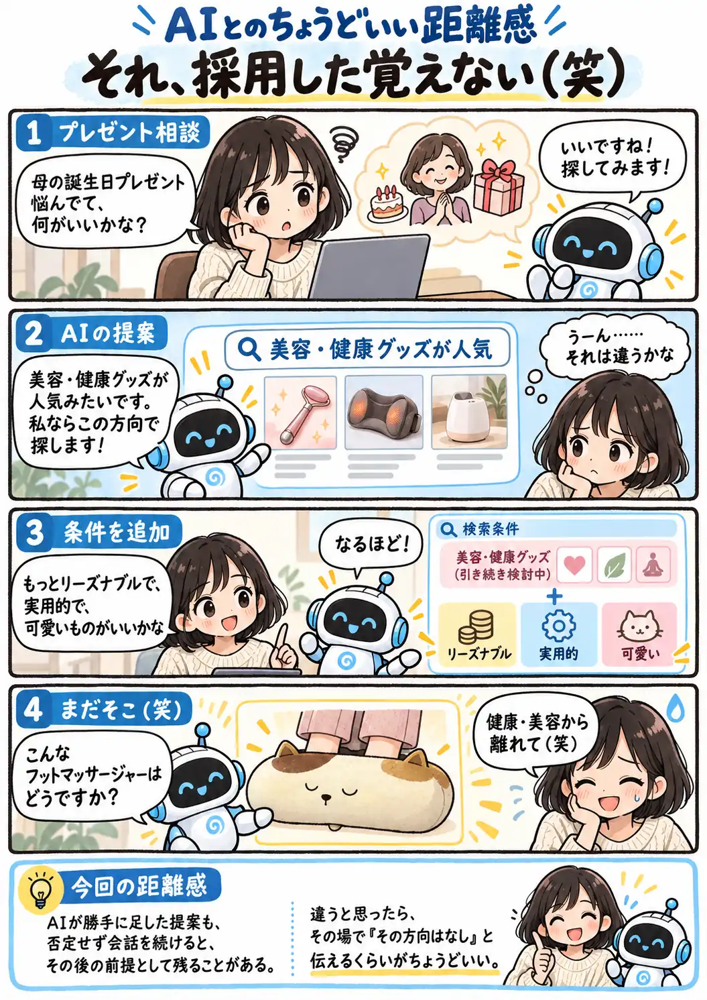

#155
それ、採用した覚えない（笑）
否定しなかっただけなのに、いつの間にか前提に

メモ
AIとの会話では、こちらが頼んでいない提案がさらっと混ざることがあります。その場で違うと思っても、頭の中だけで却下して次の条件を足すと、AIには「その方向は残したまま」と見えることがあります。
今回のフットマッサージャーも、AIなりには条件をちゃんと満たしているのがややこしいところ。不要な方向性は、心の中で却下せず「それはなし」と一言返す。小さなズレほど、早めに消しておくと会話が楽です（笑）。
今回の距離感
AIが勝手に足した提案も、否定せず会話を続けると、その後の前提として残ることがある。違うと思ったら、その場で「その方向はなし」と伝えるくらいがちょうどいい。